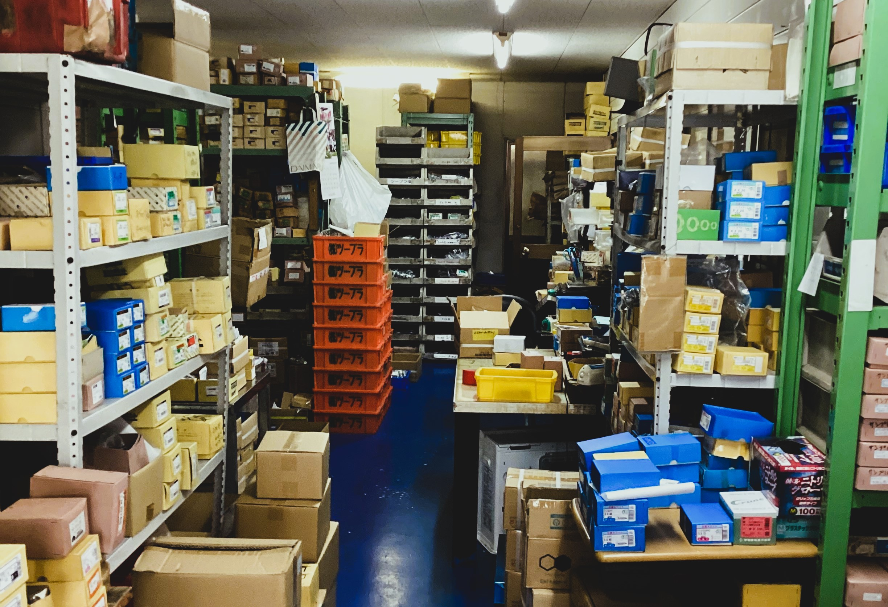

株式会社ツープラは、創業以来「確かな品質」と「迅速な対応」で、製造業・建設業のお客様の現場を支えてきました。 お客様との信頼を何より大切にし、ねじ一本からでも責任を持ってお届けします。
会社名：株式会社ツープラ
所在地：〒536-0022 大阪府大阪市城東区永田4丁目14-18
代表者：川田 研二
事業内容：ねじ・締結部品の販売、配送、提案など
製品の種類・量ともに豊富に取り揃えており、即納体制を整えています。
製品・お取引に関するご質問は、以下までお気軽にご連絡ください。
📞 06-6963-0704
✉️ k.tupura.tys@river.ocn.ne.jp